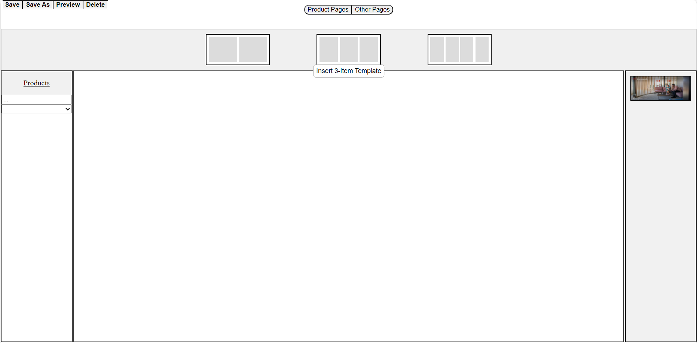

One of the larger projects which I worked on is a proposal-making app for the company,
EnviroTech. The company distributes furniture to offices and as part of their services they
create mock floor plans for their customers to view and give feedback on. The issue is that
these floorplans take a lot of time to develop for the designers; if the process could be
automated in a way such that the designer only has to select the pieces of furniture to
include in the program, and the program does the rest, a lot of time would be saved.
The program that I worked on resembles something like PowerPoint and works by having the user
select the pages that they want to add to the proposal. The user can select from a series of
stock pages that are reused across proposals and contain information about the company, or
create their own “product” pages which allow the user to pick products from the database to
add to the floor plan/proposal.
The first screen you see when you start the program.
What you see after clicking "Other Pages", the screen to add the stock/reusable images.

What you see after clicking "Product Pages", the screen where you can pick templates to select products for.
What you see after clicking on one of the templates, the screen where you pick the products.
At the end, all of the pages which the user has added are compiled and downloaded into a pdf
document. The project was made using Visual Studio and C#, HTML, CSS, and JavaScript, AJAX,
and a pdf-generating tool, jsPDF. The program started off by making a static HTML page for
when the program is opened. Then JavaScript code was added to the buttons to change the look
of the page appropriately. The last touches were getting the data for the products, having
the images added properly, and implementing the functionality for generating the pdf.
This specific project was the one where I was given the most flexibility in both how it looked,
and how it worked. I was given the task of creating a program that made making a proposal easy
using the EnviroTech products data. I had to design the program bottom-up and create all of the
pages from scratch. Creating the program taught me a lot about moving through all of the stages
of software development on an accelerated timeline. I had to use my own judgement and experience
to decide how I would make the program intuitive and easy to learn. It was a unique experience
in the context of my term and I would like to take another crack at making a project in this
way.